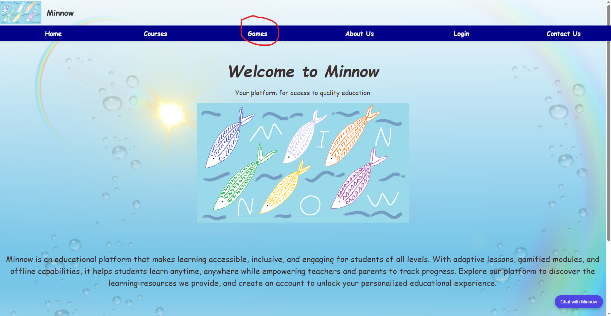
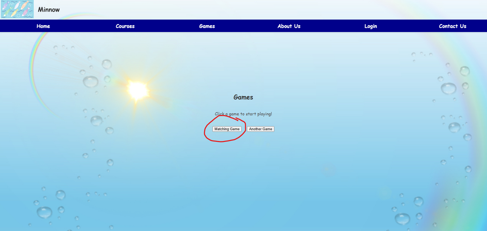
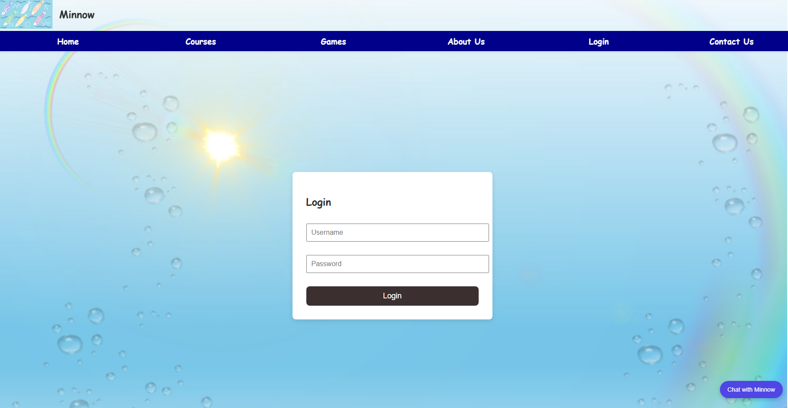
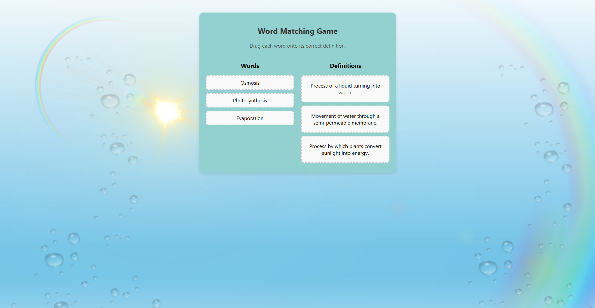
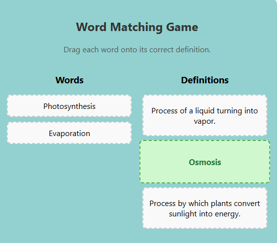
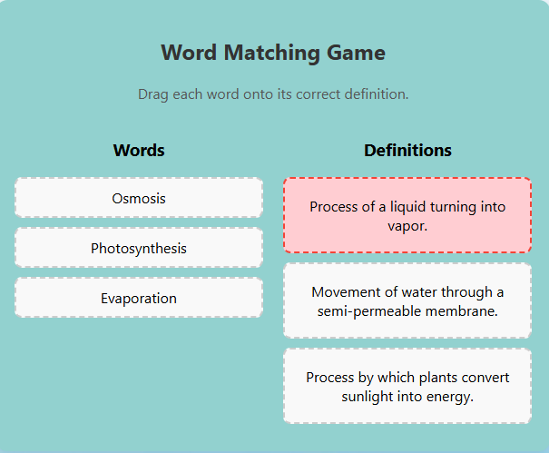
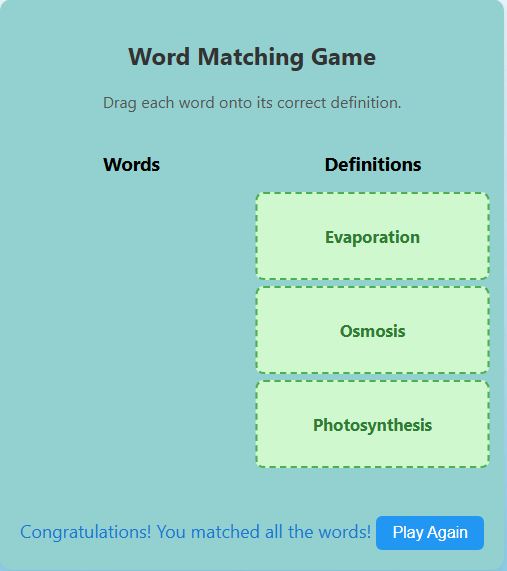

Authors: Maddie Ray

Figure 1: Our landing page. Here, multiple options for interacting with the site can be selected.
Circled in red is the button labeled “Games.” There, you can move forward to the games page and select your game!
To access the Games page:

Figure 2: This is the games page. Here, you can see the label reading “Games,”
along with an instruction telling you to click a game and start playing. There are two available buttons to press, depending on which game you would like to play.
Circled in red is the button labeled “Matching Game.”
To progress to the Matching Game:

Figure 3: If you are not logged in, you will then be brought to the login screen.
Instructions for interacting with this page can be found on the Minnow Wiki, in the “Login” section of the user guide.
If you are already logged in, this page will be bypassed, and you can progress to the next page.

Figure 4: The Layout of the Matching Game. Here, the game is presented in a turquoise panel labeled
“Word Matching Game” at the top, with the instruction “Drag each word into its correct definition” written below it. Under that, there are two columns of white boxes,
one labeled “Words,” and the other labeled “Definitions.” The boxes labeled “Words” will contain three scientific terms. These boxes can be moved.
The boxes labeled “Definitions” contain corresponding definitions to the words in the left column. These boxes cannot be moved.
To play the Matching Game:

Figure 5: A correct answer. If the word in the left column was dragged into the correct box in the right column,
the word will appear green over its definition, and a cheery ding sound effect will play. As well, the “Words” list will no longer have the term you moved,
and the “Definitions” list will have that term covering its matching definition. In the above example, Osmosis was correctly dragged over the correct definition,
and you can see that it has been moved from the “Words” list to the “Definitions” list, where it is now green.

Figure 6: An incorrect answer. If the word in the left column was dragged into the incorrect box in the right column,
the definition box will shake and turn red for a moment, and an irritated ding sound effect will play. As well, the word dragged from the “Words” list will return to its place on the “Words” list.
In the above example, Osmosis was incorrectly dragged over the incorrect definition, and you can see that it has been returned to the “Words” list.
The incorrect definition that was attempted has changed to red. Do not be discouraged though! You can try again with the same instructions found in “Layout.”

Figure 7: Congratulations! Once fifteen correct matches have been made, you have completed the Matching Game.
In the above figure, the message “Congratulations! You matched all the words!” can be read, and next to it is a blue button labeled “Play Again.”
To play again: